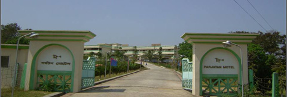

বৈচিত্র্যময় খাগড়াছড়ি
শহরের প্রবেশমুখে। পাশেই এঁকেবেঁকে বয়ে চলেছে দুরন্ত পাহাড়ি দুহিতা চেঙ্গী।

পর্যটন মোটেল খাগড়াছড়ি
নির্মাণ শৈলীর অপূর্ব নিদর্শন খাগড়াছড়ির পর্যটন মোটেল। কোন এক পূর্ণিমা রাতে চাঁদের নরম আলোয় নিজেকে বিলিয়ে দিতে চাইলে খাগড়াছড়ি পর্যটন মোটেলের বিকল্প নেই। ৬.৫০ একর জমির উপরে নির্মিত এ মোটেল মোট কক্ষ সংখ্যা ২৫টি। তন্মধ্যে ১৬টি নন-এসি কক্ষ, ০৮টি এসি কক্ষ এবং ০১টি ভিআইপি স্যুট।
১০০জন ধারণ ক্ষমতা সম্পন্ন সম্মেলন কক্ষ ছাড়াও ৫০ আসন বিশিষ্ট আধুনিক রেষ্টুরেন্ট সকল প্রকার খাবারের চাহিদা মেটাতে সক্ষম। এছাড়া মোটেলের প্রবেশ মুখে লেক, ফুলের বাগান, চেঙ্গী নদী এবং সবুজ বনানী মনোমুগ্ধকর পরিবেশ সৃষ্টি করেছে।